DFMPro は、DFMPro 設定を編集するためのインターフェースを提供します。このダイアログボックスでは、一部の設定はユーザーが必要に応じて変更できますが、残りは管理者のみが制御できます。管理者管理の設定は常に無効状態で表示され、ユーザーは変更できません。これらの設定にアクセスするには、（以下に示す）インストール先にある DFXSettingApplication.exe ファイルを右クリックし、コンテキストメニューから Run as administrator を選択します。
E.g., C:\Program Files\Geometric\DFMPro for Creo Parametric(x64)\DFMPro
以下は、DFMPro-Settings ダイアログボックスで利用可能なタブおよびサブタブです:
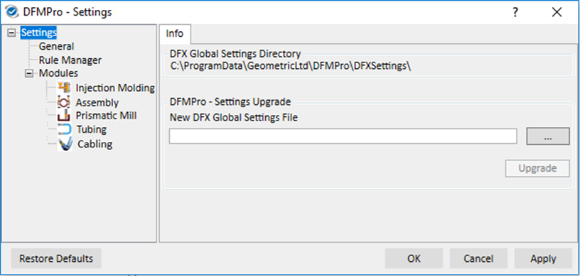
Settings タブをクリックすると、Info サブタブが表示されます。このセクションでは、既定の Directory の場所を提示し、必要に応じて新しい場所を設定することもできます。
Global Settings File をアップグレードする手順:
E.g., C:\Program Files\Geometric\DFMPro for Creo Parametric(x64)\DFMPro
General タブをクリックすると、右側ペインにさまざまなサブタブが表示されます。各タブには独自の設定セクションがあります。目的のサブタブをクリックし、必要に応じて変更してください。
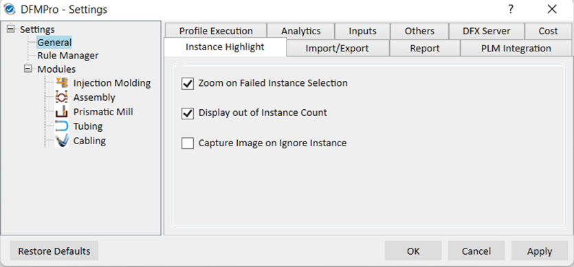
Zoom on Failed Instance Selection: この設定は、失敗インスタンスへズームインするために使用します。
Display out of Instance Count: この設定は、DFMPro の結果の失敗ツリーにおけるインスタンス数の表示/非表示を切り替えるために使用します。
E.g., チェックボックスがオンの場合、結果は (2/10 または 10/10) のように表示されます。チェックボックスがオフの場合、結果は (2 または 10) のように表示されます。
Capture Image on Ignoring Instance: この設定は、ユーザーが失敗インスタンスを無視（Ignore）したときに Review Details ダイアログボックス を起動します。
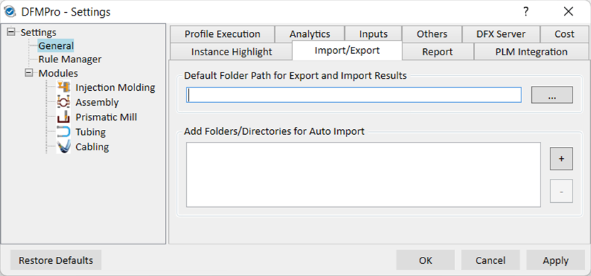
Default Folder Path for Export and Import Results: この設定は、DFMPro 結果のエクスポートおよびインポートの既定フォルダパスを設定します。
Add Folder/Directories for Auto Import: この設定は、Auto Import（自動インポート）結果に使用されます。
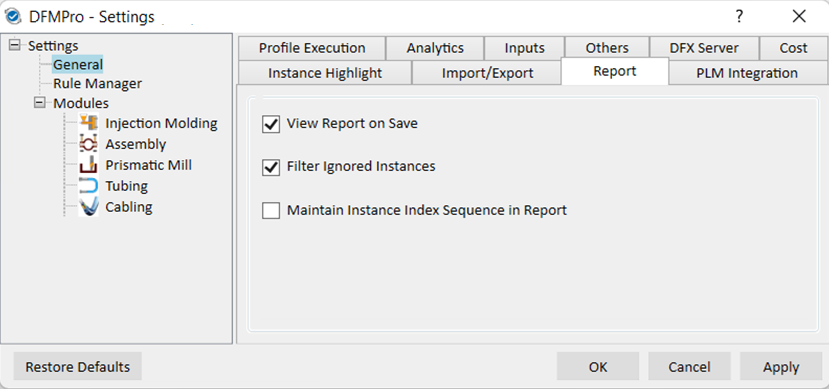
View Report on Save: 選択内容に基づき、レポート生成後に DFMPro レポートを起動します。この設定は PLM Integration には適用されません。
Filter Ignored Instances: 選択内容に基づき、DFMPro は無視（Ignore）されたインスタンスをフィルタします。
Maintain Instance Index Sequence in Report: この設定は eDrawings および Excel ベースのレポートの両方に適用されます。インスタンスが無視された後でも、インスタンスの順序（シーケンス）がレポート内で維持されます。
たとえば、チェックボックスがオンの場合、eDrawings レポート内の失敗インスタンスの順序は DFMPro の結果ツリーと同じになります。
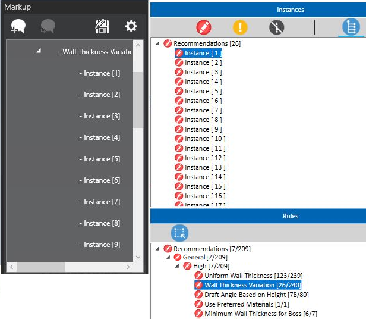
PLM Integration の設定を変更できるのは管理者のみです。設定に基づき、DFMPro の結果とレポートは PLM システムに保存されます。デフォルトでは、これらの設定はオフ（未チェック）です。
結果およびレポートをローカルにエクスポートするには、チェックボックスがオフ（未チェック）であることをユーザーが確認する必要があります。
Export-Import Results to PLM: この設定は、DFMPro 結果を PLM システムへエクスポート/インポートするために使用します。パーツがチェックインされると、結果はパーツリビジョンに添付されます。
Automatic: この設定は、パーツが保存されチェックインされると、DFMPro 結果を PLM システムへ自動的にエクスポートします。結果が PLM システムに存在する場合、ユーザーが DFMPro を起動すると自動的にインポートされます。
Add Report to PLM: この設定は、DFMPro レポートを PLM システムに追加します。
Excel、eDrawings、PDF レポートは、パーツがチェックインされるとパーツリビジョンに添付されます。
詳細については、PLM Integration with DFMPro セクションを参照してください。


Enable Profile Execution: 選択内容に基づき、プロファイル構成を選択するための DFMPro Profile Execution タブが DFMPro ユーザーインターフェースに表示されます。ユーザーは必要に応じて独自のプロファイル構成を追加できます。チェックボックスを有効にすると、Profile Definition File のパスが表示されます。
デフォルトでは、このチェックボックスはオフ（未選択）であり、DFMPro は通常どおり動作します（既存の動作）。
注:
DFMPro ユーザーインターフェースの Profile タブの下に新しいプロファイルを追加するには、ユーザーは標準の構成フォーマットに従う必要があります。
Profile Definition File Path: DFMProfile.config ファイルは、デフォルトで次の場所にあります。ユーザーはプロファイルファイルをネットワーク上の場所に置くこともできます。
C:\ProgramData\GeometricLtd\DFMPro\wildfire\Profiles
これはグローバルレベルの設定です。ただし、定義できるのは管理者のみです。非管理者ユーザーでは、この設定は無効になります。
詳細については、DFMPro Profile Execution セクションを参照してください。
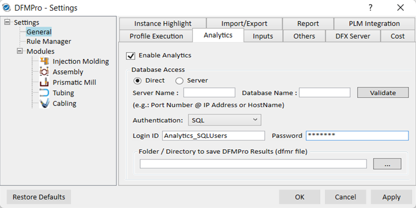
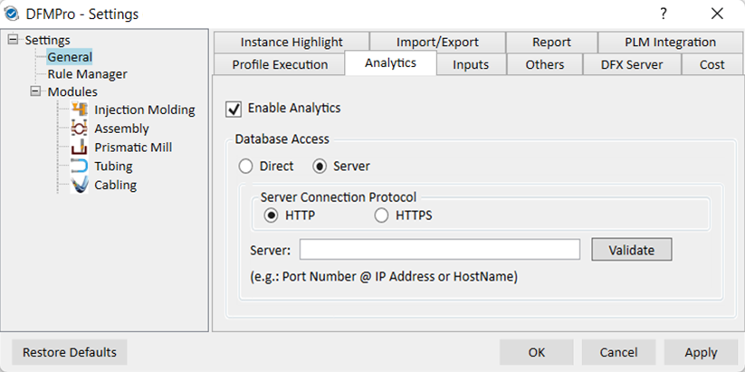
Enable Analytics: DFX Analytics は、モジュールを使用しているユーザー数、パーツの実行回数、失敗インスタンス数などの重要なデータを取得するツールです。
これはグローバルレベルの設定です。ただし、定義できるのは管理者のみです。非管理者ユーザーでは、この設定は無効になります。
Database Access: ユーザーは Direct または Server のいずれかを選択できます。
Direct: この設定は、Analytic Database と直接通信するために使用します。アクセスするには次の詳細を更新してください:
Server Name and Database Name: SQL Server が定義されているマシン名と、構成する Database 名を入力し、Validate ボタンをクリックして検証します。選択内容に基づき、DFMPro は DFX Analytics と接続を作成し、取得したデータを DFX Analytics サーバーへ投稿します。
Authentication: この設定は、必要な認証モード（Windows または SQL）を選択するために使用します。
Folder / Directory to save DFMPro Results: この設定は、DFMPro Results を保存する共有場所を定義します。
Server: この設定は、DFX Analytics Webservice を通じて Analytic Database と通信するために使用します。
Server Connection Protocol: ユーザーは、データベースアクセスに必要に応じて HTTP または HTTPS を選択できます。
Server: 次の形式で Server Port Number と IP Address/Hostname を入力し、Validate ボタンをクリックして検証し、Server と Database への接続を作成します。
PortNumber@IPAddress/Hostname
注:
Direct access 用に server と port を指定している場合、Server オプションへ切り替えると既存の server 詳細が利用されます。
Server Database Access 用に DFMPro 結果（dfmr ファイル）を保存する場所が定義されています。ユーザーは DFX Analytics ダッシュボードからファイルを直接ダウンロードできます。
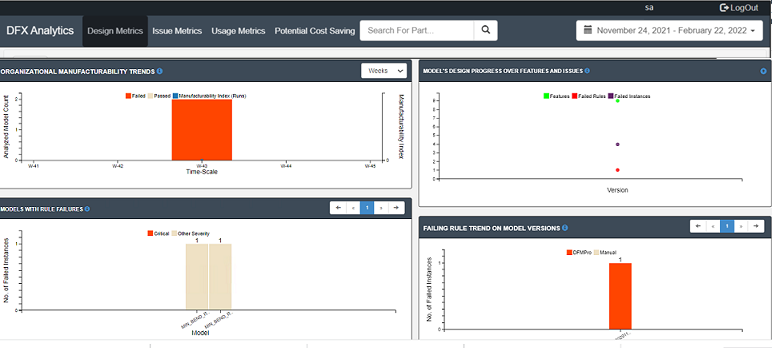
Read Material from CAD Attribute/Parameter: 一部の組織では、CAD 属性に材料情報を定義することを標準化しています。DFMPro は、設定を通じて CAD Attributes/Parameters から材料を読み取るオプションを提供します。Read Material from CAD Attribute/Parameter オプションを使用して Attribute/Parameter Name を定義してください。DFMPro は材料に関する情報を自動的に読み取り、それをルール検証に使用します。
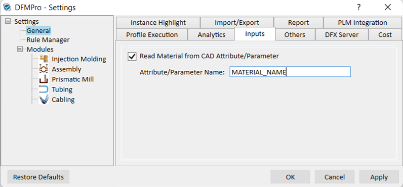
下図では、MATERIAL_NAME が Attribute name として定義され、1060 Alloy が材料として定義されています。DFMPro は CAD ファイルから Attribute Name（例: MATERIAL_NAME）を読み取り、関連する材料を検証に使用します。
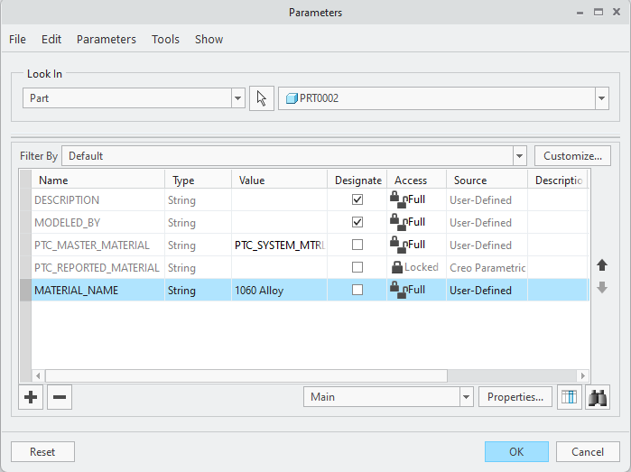

Rule Files Path: この設定は、標準のルールファイルが保管されている 標準ディレクトリ を定義します。このディレクトリにある Rule files は、Rule Configuration のドロップダウンに一覧表示されます。
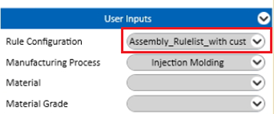
Log Files Path: この設定は、DFMPro ログファイルが保存される標準ディレクトリを定義します。ログファイルパスが指定されていない場合、temp フォルダの場所に保存されます。
“%temp%DFMPro_Log”
Log Level: この設定は、DFMPro ログファイルに書き込まれるログ情報のカテゴリを設定できるようにします。必要に応じてログファイルレベルを設定し、詳細ログを生成できます。例外が発生した場合、この詳細ログはオフショアチームに共有され、問題の理解に役立てられます。
異なるレベルを選択すると、異なる組み合わせのログが書き込まれます:
Add Run Detail Info into Parameters:
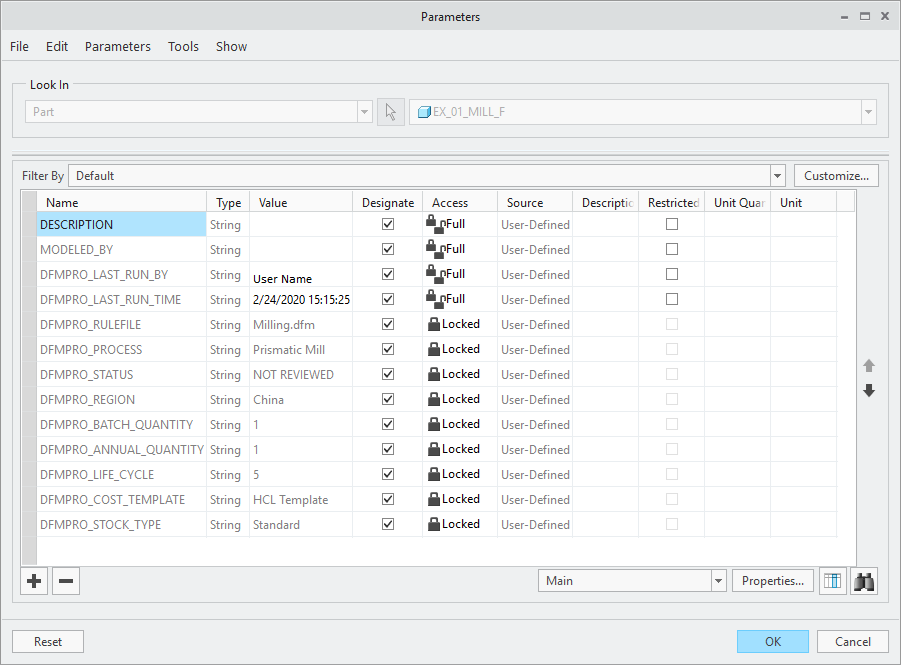
Automatic Save:
デフォルトでは、この設定はオフ（未チェック）です。ただし、管理者はオン/オフを切り替えられます。非管理者ユーザーでは、この設定は無効になります。
Enable Diagnostic Data Collection for Product Improvement - この設定は、使用状況データ収集プロセスをオン/オフします。デフォルトでは、このオプションは常に選択されています。このオプションにより、顧客側から DFMPro Usage Data を収集でき、製品の品質とパフォーマンスの向上に役立ちます。
Enable Manual Check Input Selection - この設定は、手動チェック入力選択ダイアログボックスを有効/無効にするために使用します。デフォルトでは、このオプションは常に選択されています。このオプションにより、ユーザーが手動チェックされるルールを選択できる手動チェック選択ダイアログボックスを無効化できます。
Show Unanalyzed Regions: この設定は、DFMPro 結果に未解析領域を表示します。デフォルトでは選択されます。
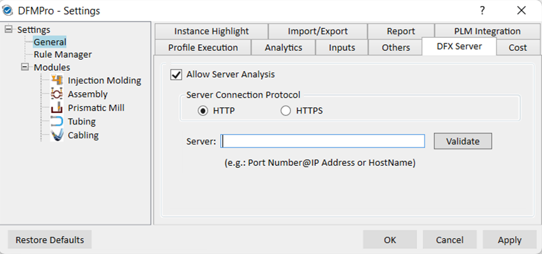
Allow server analysis: 選択内容に基づき、DFX Server タブと、Local/Server オプションが DFMPro ユーザーインターフェースに表示され、Server または Local 解析の実行要求を送信できるようになります。
これはグローバルレベルの設定です。ただし、管理者はオン/オフを切り替えられます。非管理者ユーザーでは、この設定は無効になります。
Server Connection Protocol: ユーザーは、サーバー接続に対して任意のオプションを選択できます。
Server: すでに DFX Server に定義されている Server マシン名を入力して構成し、Validate ボタンをクリックして検証します。
注:
DFX Server 設定を有効にするには、DFMPro 管理者に連絡してください。
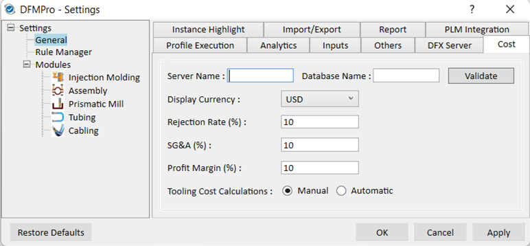
Server Name: SQL Database のサーバー名。
Database Name: Cost データベースの名前。
Display Currency: コスト計算に使用する必要な通貨タイプをドロップダウンリストから選択します。
Rejection Rate (%): 合計コストに適用される割合はパーツに対して計算され、Cost レポートでは Landed Cost の一部として反映されます。
SG&A (%): 合計コストに適用される割合はパーツに対して計算され、Cost レポートでは Landed Cost の一部として反映されます。
Profit Margin (%): Landed cost に適用される割合はパーツに対して計算され、Cost レポートでは Net Price の一部として反映されます。
注:
Rejection Rate、SG&A、Profit Margin のオプションは Assembly モジュールではサポートされません。
Tooling Cost Calculations:
注:
いずれの場合も、総治具/工具費は 5 年間の総生産数量で償却されます。
Rule Manager タブをクリックすると、右側ペインに General サブタブが表示されます。
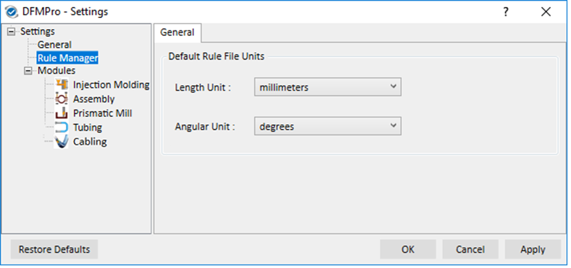
Length Unit: この設定は、ルールファイルの長さ単位を定義します。
Angular Unit: この設定は、ルールファイルの角度単位を定義します。
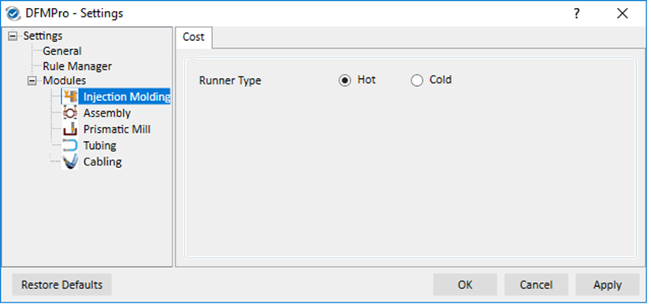
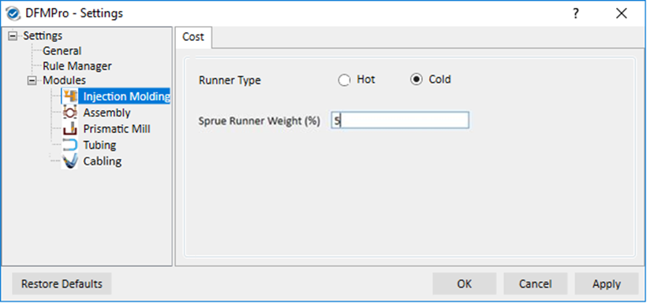
Runner Type:
General

Display Only Failed Components: この設定は、失敗結果を簡単に確認するために使用します。失敗インスタンスをクリックすると、画面上には失敗したパーツのみが表示され、残りのパーツは一時的に非表示になります。
Execute Assembly Rules only on Top Level Assembly Parts: この設定は、アセンブリルールを Assembly におけるトップレベルパーツ のみに対して実行するために使用します。
以下に列挙する項目については、個別のルール構成が DFMPro Settings より優先されます:
ユーザーは、これらのルールについて、構成時にトップレベルまたは全レベル解析の選択を個別に変更できます。その他すべてのルールについては、DFMPro Settings の選択が優先されます。
この設定はデフォルトではオフ（未チェック）です。ただし、管理者はオン/オフを切り替えられます。非管理者ユーザーでは、この設定は無効になります。
Ignore Imported Component Analysis: この設定は、Imported Component Analysis を Ignore するワークフローを定義し、同一の結果表示を回避して解析時間を改善するためのものです。
Supported ルール –
Assembly Preselection Option: デフォルトではチェックボックスが選択されています。これが選択されている場合、Inputs グループボックスの Assembly Analysis は、ドロップダウンリストに Entire Assembly と Pre-Selected Components のオプションを表示し、選択できるようになります。これが選択されていない場合、Entire Assembly オプションのみが利用可能です。
Component Identifier
ドロップダウンには、サポートされるさまざまな component identifier の一覧が表示されます。ユーザーは component identifier 内で FileName と Attribute/Parameter Name のみを設定し、ルール構成で入力するパーツ名および属性名に関連する値を与える必要があります。
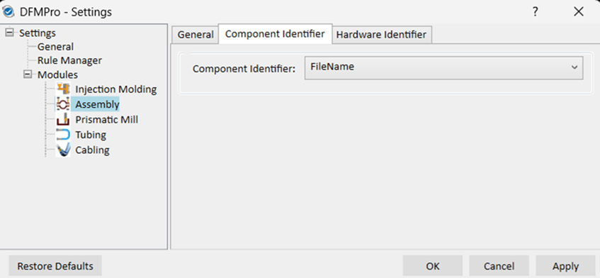
Supported ルール -
ドロップダウンメニューには次のオプションがあります:
Database/FileName: このオプションを選択すると、DFMPro は DFMPro Hardware Database から hardware 情報を取得できるようになります。
Feature Tree: feature tree により、CAD ファイルから thread 情報（male thread）を取得できます。
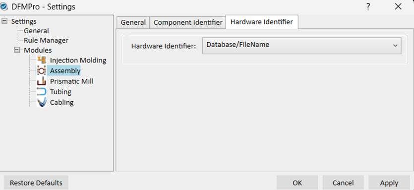
注:
現在、DFMPro は、Feature Tree と Database 構成の両方で、次の Assembly ルールをサポートしています。その他すべての Assembly ルールについては、DFMPro Database 構成のみを使用してください。
Supported ルール -
General
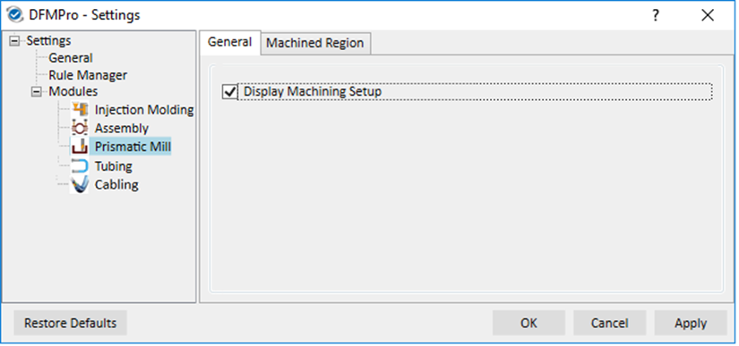
Display Machining Setup: Prismatic Mill では、DFMPro は machining setup を表示および編集するオプションを提供します。この設定により、ユーザーは Machining Setup check box をクリックして machine setups を確認します。machining setups の数と feature リストは、設計者が setups を理解するのに役立ちます。setup 情報に基づき、設計者は設計の features を最適化できます。定義された setups に基づいて、DFMPro のルール検証が実行されます。
詳細情報は Machining Setup にあります。
Machined Region
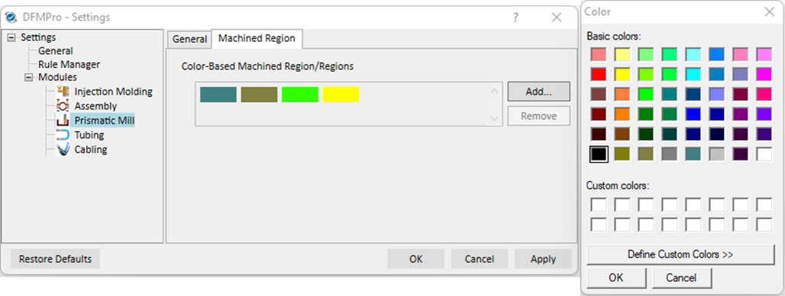
Color-Based Machined Region/Regions: Machined regions は色によって識別されます。CAD モデル上の machined regions を識別するために Setting file に定義された色に基づき、DFMPro は自動的にその色を取得し、解析のための Entity Selection グループボックスに表示します。
デフォルトでは、machined region の色コードは選択されていません。ユーザーは Add ボタンを使用して色コードを追加し、machined regions と一致させる必要があります。
これはグローバルレベルの設定であり、管理者権限を持つユーザーが定義できます。
詳細情報は Analysis with Multiple Processes にあります。
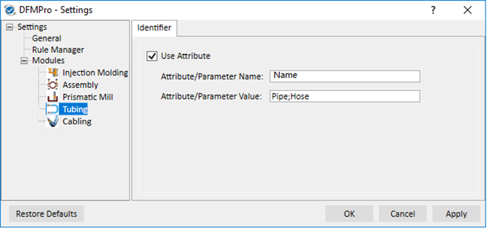
この設定は、Attribute/Parameter 名と値を通じてチューブを識別するために提供されます。ユーザーは pipe 属性名とそれらの値を追加できます。
Input |
Interpretation |
Pipe |
Attribute values には、(space, -, _) を含まずに "pipe" 名のみが含まれている必要があります。 |
*Pipe* |
Attribute values の名前に "pipe" が含まれている必要があります。 |
*_Pipe |
すべての attribute values は "_pipe" で終わる必要があります。 |
Tube Identification
チューブ識別の優先度は、attributes/parameters で利用可能な情報と、settings に構成された値に対する一致状況に従います。参考として下図を参照してください。
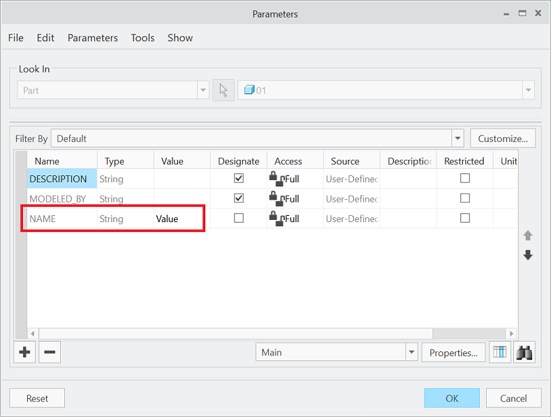
Note:
Pipe コマンドおよび Pipe Application を使用して作成された Pipes が検証対象として考慮されます。
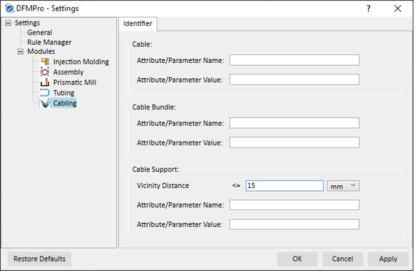
Cable: この設定は、Attribute/Parameter 名と値を通じて cable を識別します。ユーザーは cable 属性名とそれらの値を追加できます。
Cable Bundle: cable bundle は、複数の cables が存在するサブアセンブリです。この設定は、Attribute/Parameter 名と値を通じて cable bundle を識別します。
Cable Support: ユーザーは cable support コンポーネントの一覧を定義できます。support コンポーネントは、パーツの Attribute/Parameter 名と値で識別されます。ユーザーは “;”（セミコロン）で区切って複数の support コンポーネントを定義できます。
Vicinity Distance: 多くの場合、support コンポーネントは cable/cable bundle に接触しておらず、cable の近くに配置されています。DFMPro は、適切な support コンポーネントを識別するための “Vicinity Distance” 値を提供しており、これは Recommended Distance Between Cable Supports ルール検証の入力として使用されます。
これはグローバルレベルの設定であり、構成できるのは管理者のみです。
Note:
上記の設定に基づき、すべての cables および cable bundles が分類されます。
Cable、Cable Bundle、および Support Component 構成の入力フォーマット
Input |
Interpretation |
Cable |
Attribute values には、(space, -, _) を含まずに "cable" という名前のみが含まれている必要があります。 |
*Cable* |
Attribute values の名前に "cable" が含まれている必要があります。 |
*_Cable |
すべての attribute values は "_cable" で終わる必要があります。 |
例:
以下のサンプル cabling assembly では cable parameter が定義されており、DFMPro はこの parameter を使用して cable と support component を識別します。
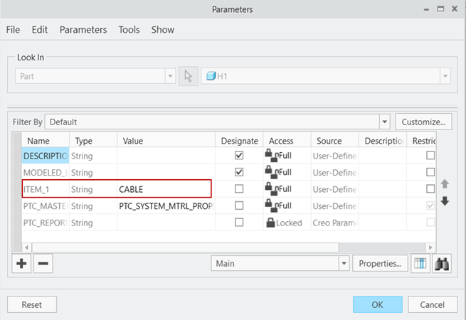
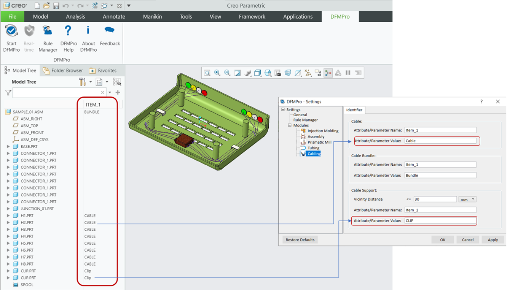